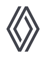
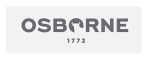
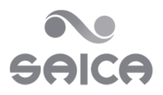

ESCUCHAR ANTES DE PROPONER
Entender.
Una conversación de 30 minutos con un directivo del sector. Vemos qué necesita mejorar vuestra operación y pactamos un indicador concreto.
EL PUNTO DE PARTIDA / Diagnóstico compartidoESPECIALISTAS EN FORMACIÓN LOGÍSTICA · IN COMPANY EN TODA ESPAÑA
Práctica, a medida e impartida por directivos en activo. Para que tu equipo rinda más y tu operación cueste menos, desde el primer día.
In company en toda España.
Every step covered.
EMPIEZA POR TU CONTEXTO
Garantía de resultado: lo medimos a los 60 días y, si no llega, reforzamos gratis.
horas de formación
in company acreditadas
empresas formadas
formaciones al año
países donde hemos
formado equipos
formadores que dirigen
operaciones en activo
para medir resultados.
Si no llegan, reforzamos gratis.
01 / CONOCIMIENTO QUE MUEVE
De la operación a la estrategia. Desarrollamos las capacidades que tu organización necesita para dar su siguiente paso.
Buscar por departamento ↗Conecta almacén, inventario y planificación. Transforma tu cadena de suministro en una ventaja competitiva.
Explorar programasDel proceso al resultado↗ 02 / ESTRATEGIANegociar con datos. Comprar por valor. Desarrolla una visión estratégica de proveedores, costes y aprovisionamiento.
Explorar programasDecisiones con criterio↗ 03 / CONEXIÓNRutas más eficientes, flotas mejor gestionadas y equipos preparados para un transporte cada vez más digital.
Explorar programasCada kilómetro cuenta↗ 04 / VISIÓN GLOBALAbre mercados con confianza. Aduanas, Incoterms, cumplimiento y operativa internacional sin fronteras para tu equipo.
Explorar programasMás allá de las fronteras↗ 05 / PERSONASDe dirigir tareas a activar talento. Comunicación, autonomía y liderazgo para equipos que avanzan juntos.
Explorar programasEl cambio empieza en ti↗ 06 / FUTURO APLICADOConvierte la tecnología en una capacidad real. Inteligencia artificial, Power BI y automatización al servicio de tu operación.
Explorar programasTecnología con propósito↗02 / UNA SOLUCIÓN PARA CADA RETO
Partimos de vuestra operación para diseñar contenidos, elegir al experto y pactar el indicador que queremos mejorar. Cualquier tema, nivel o departamento.
Desarrollamos capacidades para que los mandos decidan, los departamentos colaboren y las personas apliquen lo aprendido desde el primer día.
Revisamos el crédito de vuestra empresa, ajustamos el programa y gestionamos la bonificación sin coste añadido. Con una propuesta clara desde el principio.
Un solo interlocutor, herramientas para planificar y un informe de resultados que habla el idioma de dirección: indicadores de negocio.
Sesiones en directo con el formador, materiales y evaluaciones. El campus conecta a equipos de distintos turnos y sedes en una experiencia compartida.
ASÍ PUEDE SER VUESTRO PROGRAMA
{{hr.code}}KPI PACTADO · DÍA 60{{hr.kpi}}
Ver área ↗03 / HAZ QUE TU CRÉDITO CUENTE
Calcula el crédito anual estimado y simula cuánto puede bonificarse una formación según participantes, horas, modalidad y nivel.
Ver detalle FUNDAEEstimación orientativa. El crédito real se valida con la cuenta FUNDAE de la empresa.
Tramo: {{tramo}} · {{pctLabel}} de lo cotizado
Disponible hoy: {{disponibleLabel}}
{{calcLabel}}
{{usoLabel}}
Aportación privada mínima de tu tramo: {{cofinLabel}} del coste total.
Validar con mi crédito real ↗Estimación orientativa. Crédito = 0,70 % de la base de cotización del año anterior × porcentaje del tramo. Módulos máximos por participante y hora según modalidad y nivel.
04 / DEL CONOCIMIENTO AL IMPACTO
Enseña quien dirige hoy. Trabajamos con vuestra realidad y medimos lo que cambia después.
Conoce Logístikos en vídeo ↗20+ años en el sector. Conoce al equipo →ESCUCHAR ANTES DE PROPONER
Una conversación de 30 minutos con un directivo del sector. Vemos qué necesita mejorar vuestra operación y pactamos un indicador concreto.
EL PUNTO DE PARTIDA / Diagnóstico compartidoVUESTRA REALIDAD ES EL TEMARIO
Contenidos, duración y modalidad a medida. Os proponemos dos perfiles de formador y elegís al experto que mejor encaja con vuestro equipo.
LA HOJA DE RUTA / Propuesta cerradaAPRENDER HACIENDO
Casos reales del sector, adaptados a vuestros procesos. Formación presencial, Online Live o híbrida, compatible con turnos y sedes.
EN EL TERRENO / Capacidades que se aplicanEL RESULTADO ES LO QUE IMPORTA
A los 60 días volvemos al indicador acordado y entregamos un informe de impacto. Si no se alcanza el resultado esperado, reforzamos gratis.
NUESTRO COMPROMISO / Medición y refuerzo05 / EL SIGUIENTE PASO DE TU EQUIPO
6 programas disponibles
FORMACIÓN TRANSVERSAL · DIPLOMA UNIVERSITARIO
5 sesiones de 5 horas. Grupo mínimo de 15 personas de la misma empresa. Diploma de la Fundación General de la Universidad de Salamanca.
APRENDER ES SOLO EL PRINCIPIO.
El conocimiento
cambia personas.
Las personas
transforman organizaciones.
Las organizaciones
construyen futuro.
06 / EXPERIENCIA QUE SE COMPARTE
Nuestros formadores son directivos y profesionales en activo. Estas son algunas de las compañías con las que colaboran.



07 / UN PASO POR DELANTE
INTELIGENCIA ARTIFICIAL / FORMACIÓN
Alfabetización en IA, uso responsable y nuevas capacidades para toda la plantilla.
Explorar actualidad ↗01 / TRANSPORTE
Documentación digital y cambios que afectan al transporte y la distribución.
02 / SOSTENIBILIDAD
Envases, huella de carbono y cumplimiento en compras y comercio exterior.
Recibe las novedades en tu correo08 / RECURSOS PARA PASAR A LA ACCIÓN
Detrás de cada proyecto, directivos que forman. Nacimos como consultora de comercio internacional y cadena de suministro y llevamos más de 20 años en el sector.
ASÍ PLANTEAMOS UN PROYECTO
Ejemplos ilustrativos de retos habituales y de cómo los abordamos. En el diagnóstico te damos referencias de clientes con retos parecidos al tuyo.
El reto: Errores de preparación y abonos a clientes en un operador de 180 personas.
La formación: Jefe de almacén y Lean con Yellow Belt. 20 h, presencial y por turnos.
El indicador: Reducir a la mitad los errores por 1.000 líneas en 60 días.
El reto: Tacógrafo y coste del combustible en una flota de 60 vehículos.
La formación: Tacógrafo y tiempos de conducción (8 h), más gestión económica de flota (16 h). Híbrida.
El indicador: Cero sanciones y coste por kilómetro bajo control.
El reto: Aranceles cambiantes y mercancía retenida en aduana.
La formación: Renegociación de contratos internacionales y gestión aduanera práctica. Online Live.
El indicador: Contratos adaptados y despachos sin incidencias.
Sí. Un Sprint de 8 horas puede bastar para un equipo de cinco personas.
Sí. Revisamos vuestro crédito, ajustamos el programa y gestionamos el trámite sin coste añadido.
Si trabajamos con documentación de la empresa, firmamos NDA antes de verla y vuestra dirección valida cada caso antes de la primera sesión.
Sí. Repetimos sesiones por turno y combinamos presencial y Online Live.
Se imparte en directo a través de nuestro campus virtual. Las sesiones quedan grabadas y están disponibles hasta 15 días después de que finalice el curso.
Medimos el indicador pactado a los 60 días. Si los resultados no son los esperados, volvemos a reforzar la formación de forma gratuita.
EL FUTURO SE ACTIVA EN EL PRESENTE
30 minutos. Un reto compartido.
El primer paso hacia lo que viene.
FORMACIÓN · TALENTO · TRANSFORMACIÓN
Partimos de lo que está frenando hoy a tu equipo y diseñamos formación in company práctica, medible y conectada con el negocio.
6 áreas de decisión. 24 programas de referencia. Una misma lógica: aprender haciendo.
Estas son las formaciones que más nos solicitan este año. Funcionan como punto de partida: duración, nivel, modalidad y casos se ajustan después del diagnóstico.
EXPLORADOR DE FORMACIÓN
{{cur.profiles}}
{{cur.pain}}
Horas orientativas. Ajustamos duración y nivel tras el diagnóstico.
DEL PROGRAMA AL RESULTADO
Definimos el reto, el indicador y el contexto del equipo antes de diseñar contenidos. Después medimos si el aprendizaje se ha traducido en una mejora observable.
Conoce cómo diseñamos a medida ↗¿NO VES EXACTAMENTE LO QUE NECESITAS?
CALCULADORA DE CRÉDITO FUNDAE
Calcula tu crédito anual, lo que te queda disponible y cuánto bonifica cada formación según su modalidad. Después gestionamos el trámite completo, sin coste añadido.
Estimación orientativa.
CRÉDITO ANUAL ESTIMADO
Disponible hoy:
ESTA FORMACIÓN BONIFICA HASTA
{{calcLabel}}
{{usoLabel}}
Aportación privada mínima de tu tramo: {{cofinLabel}} del coste total. Puede cubrirse con el coste salarial de los participantes en horario laboral.
Validar con mi crédito real en 24 hEstimación orientativa. El crédito real se valida con la cuenta FUNDAE de la empresa.
CALENDARIO DE UNA FORMACIÓN BONIFICADA
Los gestionamos nosotros, pero RRHH debe conocerlos. Te avisamos de cada hito por email.
−15 DÍAS
Si hay representación legal, se le informa del plan antes de empezar.
−2 DÍAS
Alta del grupo en FUNDAE con fechas, horario, lugar y participantes.
DURANTE
Firmas o registros de conexión y al menos el 75 % de asistencia por participante.
AL TERMINAR
Costes, cuestionarios y aplicación del descuento en los seguros sociales.
TU EMPRESA · LA FORMACIÓN
JEFE DE ALMACÉN · 20 H · PRESENCIAL
10 participantes × 20 h × 13 €/h
hasta 2.600 €
bonificables, sujeto al crédito disponible de la empresa.
ESTIMACIÓN ORIENTATIVA
Estimación orientativa. Crédito = 0,70 % de la base de cotización del año anterior × porcentaje del tramo (100 % hasta 9 personas, 75 % de 10 a 49, 60 % de 50 a 249 y 50 % desde 250; mínimo de 420 € de 1 a 5). Módulos máximos por participante y hora: presencial y aula virtual 9 € (básico) o 13 € (superior); teleformación 7,50 €. El dato exacto lo consultamos en vuestra cuenta de FUNDAE.
El salario bruto medio se usa como aproximación de la base de cotización. La calculadora no valida costes reales, crédito oficial ni todos los condicionantes de bonificación.
HABLEMOS
El dato exacto lo consultamos en vuestra cuenta de FUNDAE.
PARA RECURSOS HUMANOS · HERRAMIENTAS · PLANIFICACIÓN
Herramientas gratuitas para detectar necesidades, planificar, justificar y medir la formación de operaciones. Y un equipo que se ocupa del resto.
7 herramientas para convertir necesidades de formación en un plan defendible, medible y preparado para FUNDAE.
Registrado: {{kitEmail}}. Descarga ahora las 7 herramientas en un solo archivo.
Descargar kit completo (ZIP) →KIT RRHH
Seis recursos descargables para trabajar con incidencias reales, ordenar el plan anual, preparar FUNDAE y presentar resultados al comité.
Cuestionario para mandos de almacén, tráfico, compras y comercio exterior. Cruza incidencias reales con carencias de formación.
Descargar Excel →Acciones, grupos, calendario por turnos y consumo de crédito FUNDAE en una sola hoja, con resumen ejecutivo.
Descargar Excel →Competencias técnicas y de gestión por puesto, de preparador a dirección de operaciones, con niveles para evaluar al equipo.
Descargar Excel →Todo lo que debe existir si llega una revisión: RLT, comunicaciones, controles de asistencia, evaluación y cuestionario de calidad.
Descargar PDF →Qué herramientas de IA usa cada puesto, qué formación ha recibido y la evidencia documental que acredita el cumplimiento.
Descargar Excel →Modelo de cuatro niveles —satisfacción, aprendizaje, aplicación y resultados— con KPIs logísticos para presentar al comité.
Descargar Excel + guía →CALENDARIO DE UNA FORMACIÓN BONIFICADA
Los gestionamos nosotros, pero tu equipo debe conocerlos. Te avisamos de cada hito por email.
Si hay representación legal, se le informa del plan antes de empezar.
Alta del grupo en FUNDAE con fechas, horario, lugar y participantes.
Firmas o registros de conexión y al menos el 75 % de asistencia por participante.
Costes, cuestionarios y aplicación del descuento en los seguros sociales.
LO QUE RRHH RECIBE
No solo impartimos formación. Dejamos trazabilidad, costes claros y argumentos para explicar qué se hizo y qué cambió.
Desde el diagnóstico hasta el informe final.
La propuesta indica qué paga el crédito y qué no.
Resultados en KPIs de operación, no solo en horas.
Expediente completo, listo para cualquier revisión.
FUNDAE
Usa el simulador del proyecto para estimar el crédito anual y comparar la bonificación según modalidad.
Cada trimestre revisamos normativa, tecnología y mercado. Si algo va a cambiar cómo compráis, almacenáis o movéis mercancía, existe un programa antes de que llegue la inspección, el cliente o la licitación.
CURSOS DE ESPECIALIZACIÓN UNIVERSITARIA · 25 H
Cursos de temática transversal, pensados para formar a la vez a personas de distintos puestos y departamentos de una misma empresa. 5 sesiones de 5 horas con un proyecto final aplicado a vuestra actividad.
UN SOLO GRUPO · DISTINTOS DEPARTAMENTOS
El grupo se forma junto porque los contenidos sirven para almacén, tráfico, compras, administración y dirección. El proyecto final aterriza lo aprendido sobre una situación real de la empresa.
6 PROGRAMAS · 25 H · 5 SESIONES
Seis programas transversales para desarrollar capacidades compartidas entre departamentos sin separar a la empresa por silos.
Cómo usar la IA generativa en el día a día de forma útil, segura y conforme al AI Act, sea cual sea el puesto.
Una visión común de la cadena, de compras a la entrega, para que cada área entienda cómo su trabajo afecta a las demás.
Liderar sin amargar: comunicación clara, feedback y colaboración para equipos que funcionan sin depender de un jefe.
Herramientas Lean aplicables en almacén, taller y oficina para eliminar desperdicios y trabajar mejor con los mismos recursos.
Excel avanzado, cuadros de mando y lectura de datos para que todos decidan con información y no con intuiciones.
Qué piden hoy clientes y normativa en huella de carbono, envases y residuos, y qué puede hacer cada puesto para cumplir y ahorrar.
APRENDER · APLICAR · PRESENTAR
La quinta sesión se dedica al proyecto final: una mejora, un cuadro de mando, un mapa entre departamentos o una aplicación real de IA sobre el trabajo del participante.
¿OTRO TEMA TRANSVERSAL?
EXECUTIVE PROGRAMS · 2 MESES
Para directivos y mandos intermedios que necesitan dar un salto en poco tiempo.
QUIÉNES SOMOS
Logístikos nació como consultora de comercio internacional y cadena de suministro. Formamos en lo mismo que hacemos cada día para nuestros clientes: comprar mejor, mover mercancía con menos coste y cruzar fronteras sin sorpresas.
SEDE · MURCIA
ÁMBITO · TODA ESPAÑA
AULA VIRTUAL · INTERNACIONAL
POR QUÉ "INCONFORMISTAS"
No para llenar horas de aula. Cada programa empieza con un KPI pactado y termina con su medición. Si no hay resultados, reforzamos gratis.
Nuestros formadores dirigen almacenes, tráfico, compras o aduanas. Traen al aula el problema de esta semana, no el del manual.
Partimos de vuestros procesos y de casos reales del sector. Ningún programa se imparte dos veces igual.
DIRECCIÓN
Economista · 20+ años en logística y comercio internacional
DIRECCIÓN
Economista · Director de Logístikos
Más de veinte años entre la logística, el comercio internacional y la formación de directivos. Dirige Logístikos como consultora de comercio exterior y cadena de suministro, y ha fundado escuelas de negocio especializadas en sectores como la agroalimentación y el transporte.
RED DE FORMADORES
Directores de operaciones, jefes de tráfico, responsables de compras y de aduanas. Elegimos al formador según vuestro sector, vuestra mercancía y el indicador que queréis mover.
Hablemos de vuestro retoNUESTROS LOGÍSTIKOS
Nuestros formadores son directivos y profesionales de referencia del sector. Estas son algunas de las compañías con las que colaboran.
HABLEMOS
FORMACIÓN A MEDIDA · IN COMPANY
No tienes que encajar en un catálogo. Cuéntanos qué necesita tu equipo y diseñamos la formación desde cero: el contenido, la duración, la modalidad y el formador.
QUÉ PUEDES PEDIRNOS
Partimos de vuestra realidad operativa, no de una plantilla cerrada. La formación se construye alrededor del reto.
Una norma nueva, una herramienta, un proceso o una técnica concreta.
Errores, costes, retrasos o incidencias. No sabes qué formación hace falta: lo diagnosticamos.
Un turno, un departamento, mandos recién promocionados o toda la plantilla.
Itinerarios por puesto, calendario por turnos y crédito FUNDAE optimizado.
EJEMPLOS DE LO QUE NOS PIDEN
No se trata de sumar horas de formación. Se trata de resolver algo concreto en la operación.
Formar a los carretilleros en el nuevo layout antes de la campaña
Preparar a compras para negociar con proveedores de otros continentes
Explicar el nuevo ERP a tráfico y administración a la vez
Reducir los errores de documentación en exportación
Coordinar almacén, tráfico y comercial para dejar de culparse entre sí
Convertir a los mejores operarios en jefes de turno
CÓMO FUNCIONA
Un proceso claro, medible y pensado para encajar con turnos, sedes y objetivos reales.
Una llamada de 30 minutos. No hace falta que sepas qué formación necesitas: basta con contarnos qué quieres mejorar.
Revisamos vuestra operación, los datos y los procesos implicados. Separamos lo que es falta de formación de lo que es un problema de organización.
Contenidos, duración, modalidad, calendario por turnos, presupuesto y bonificación FUNDAE. Sin sorpresas.
Te presentamos dos formadores con perfiles distintos y eliges el que mejor encaja con tu equipo.
Creamos manuales, procedimientos y herramientas a medida, y formamos con casos prácticos adaptados a vuestra operación.
A los 60 días medimos el indicador pactado. Si el resultado no es el esperado, reforzamos gratis.
MODALIDADES
En vuestro almacén, plataforma o aula
En directo en nuestro campus; grabaciones durante 15 días
Para varios turnos o sedes
FORMATOS
El tema, la duración y el formador que necesites
Un reto urgente, en tres semanas
Un área, un cambio medible
Itinerarios por puesto y plan FUNDAE
Diploma de la Fundación General de la Universidad de Salamanca · mín. 15 personas
QUÉ INCLUYE SIEMPRE
Todo esto va incluido en el proyecto.
¿NO VES EXACTAMENTE LO QUE NECESITAS?
LOGÍSTIKOS AL DÍA · ÚLTIMA REVISIÓN: 26 DE SEPTIEMBRE DE 2026
Cambios de normativa, plazos que vencen y formaciones de obligado cumplimiento para empresas de logística, transporte y comercio exterior. Lo resumimos para que sepas qué revisar y qué hacer ahora.
Normativa, inspección y plazos con impacto directo en operaciones.
Aduanas, transporte, compras y compliance operativo.
No esperar a la obligación: formar antes para llegar a tiempo.
RADAR NORMATIVO
Lectura rápida para dirección, RRHH y operaciones. Contenido orientativo a partir de fuentes oficiales y del sector; verifica siempre la norma aplicable a tu caso.
La AEAT convocó en julio las pruebas de aptitud para representante aduanero. El plazo de solicitud termina el 30 de septiembre.
Los vehículos ligeros de 2,5 a 3,5 t que hacen transporte internacional deben llevar tacógrafo inteligente de segunda generación.
Los envíos de bajo valor desde fuera de la UE pagan un arancel fijo de 3 € por tipo de artículo, de forma transitoria hasta 2028.
Tras el acuerdo de marzo de 2026 sobre el Código Aduanero de la Unión, se esperan nuevos requisitos de identificación de producto y una tasa de gestión.
Empieza a aplicarse el nuevo reglamento de envases y residuos de envases, que afecta también al embalaje de transporte.
Diligencia debida y geolocalización del origen para café, cacao, soja, palma, madera, caucho y bovino. Micro y pequeñas empresas, desde el 30 de junio de 2027.
Las importaciones de acero, aluminio, cemento, fertilizantes, hidrógeno y electricidad requieren declarar sus emisiones.
La ley impulsa que la documentación de control del transporte sea digital; queda pendiente su desarrollo reglamentario. El Plan de Inspección 2026 refuerza además el control de tiempos.
PULSO 90 DÍAS
Si tu equipo usa sistemas de IA, la capacitación ya es exigible.
Último día de solicitud para presentarse a las pruebas.
Se esperan nuevas obligaciones en producto, datos y gestión.
Fecha clave para operadores con productos afectados.
FORMACIONES DE OBLIGADO CUMPLIMIENTO
Las más habituales en almacén, transporte y comercio exterior. Si os falta alguna, la organizamos y gestionamos su bonificación.
Toda la plantilla · Alta o cambio de puesto/equipos.
Toda la plantilla, al incorporarse y al cambiar de puesto o equipos.
Ley 31/1995, art. 19.
Al incorporarse y cuando cambian los riesgos.
Equipos de manutención · Reciclaje periódico recomendado.
Quien maneje carretillas y equipos de manutención.
RD 1215/1997 (UNE 58451 como referencia).
Inicial, con reciclaje periódico recomendado.
Personal designado · Actualización periódica.
Personal designado en el plan de emergencia.
Ley 31/1995, art. 20.
Inicial y actualización periódica.
Conductores de camión y autobús · 35 horas cada 5 años.
Conductores de camión y autobús.
RD 284/2021.
35 horas cada 5 años.
Conductores y empresa · Revisar con cada cambio normativo.
Conductores; la empresa debe formarlos e instruirlos.
Reglamento (UE) 165/2014, art. 33.
Al incorporarse y con cada cambio normativo.
Carga, descarga, expedición y conducción · Renovación cada 5 años.
Personal que carga, descarga o expide; consejero y conductores ADR.
ADR, capítulos 1.3 y 1.8.
Según función; certificados renovables cada 5 años.
Logística alimentaria · Inicial y según plan de higiene.
Personal que manipula alimentos en logística alimentaria.
Reglamento (CE) 852/2004.
Inicial y según el plan de higiene.
Equipos que usan IA · Revisar al introducir nuevas herramientas.
Personal que usa sistemas de IA en su trabajo.
Reglamento (UE) 2024/1689 (AI Act), art. 4.
Desde febrero de 2025 y al introducir nuevas herramientas.
Revisamos gratis vuestras formaciones obligatorias y os decimos qué falta.
Tabla orientativa. Las obligaciones concretas dependen de la actividad, el puesto y la evaluación de riesgos de cada empresa.
SEGÚN TU ÁREA
Mapa de obligaciones, reciclajes, evidencias y plan anual.
Ir a recursos para RRHH →Aplicación práctica en almacén, tráfico, aduanas y transporte.
Ver formación a medida →Priorizar riesgos, impacto operativo y decisiones de formación.
Agendar diagnóstico →CAMPUS VIRTUAL · ONLINE LIVE
Sesiones en directo, grabaciones, materiales y evaluaciones en un espacio pensado para seguir el curso sin perder el ritmo de la operación.
TODO EN EL MISMO FLUJO
El campus acompaña la formación Online Live y facilita tanto la experiencia del alumno como el seguimiento de asistencia necesario para la bonificación.
Clases con el formador en tiempo real, participación y resolución de dudas.
Revisa una sesión o recupera una clase hasta 15 días después de terminar el curso.
Manuales, plantillas, ejercicios y pruebas disponibles desde el mismo espacio.
Registro de conexiones y asistencia para justificar la bonificación de la formación.
CÓMO FUNCIONA
Las credenciales se envían por email al inscribirte. Desde ahí, el alumno entra al espacio del curso y encuentra todo lo necesario.
Usuario y contraseña llegan al correo indicado en la inscripción.
Acceso a sesiones, materiales, avisos y calendario.
Con el formador y el resto del grupo, desde cualquier ubicación.
Grabaciones, ejercicios y evaluaciones quedan centralizadas.
ACCESO AL CAMPUS
Introduce tus credenciales. Si todavía no las tienes o necesitas recuperarlas, escríbenos y te ayudamos.
Las credenciales se envían por email al inscribirte en un curso.
Equipos de exportación e importación que asignan bien los Incoterms, preparan la documentación a la primera y llegan preparados a las nuevas obligaciones europeas.
Gestionamos el trámite completo sin coste añadido. Calcula tu caso exacto en la calculadora de la página principal.
Ir a la calculadora →Compradores que negocian con datos, homologan alternativas antes de necesitarlas y firman contratos que aguantan aranceles, subidas de materias primas y proveedores únicos.
Gestionamos el trámite completo sin coste añadido. Calcula tu caso exacto en la calculadora de la página principal.
Ir a la calculadora →Equipos que usan la IA para quitarse trabajo repetitivo, leen los datos de la operación y toman decisiones con ellos, dentro de una política de uso segura y conforme al AI Act.
Gestionamos el trámite completo sin coste añadido. Calcula tu caso exacto en la calculadora de la página principal.
Ir a la calculadora →Liderazgo operativo para jefes de turno y mandos intermedios: coordinar con calma en los picos, dar feedback, sostener rutinas de gestión visual y resolver sin escalar cada problema.
Para directivos y mandos de operaciones que quieren dejar de mandar y empezar a liderar: equipos que deciden solos, conversaciones que cambian conductas y menos problemas que suben siempre al mismo despacho.
Gestionamos el trámite completo sin coste añadido. Calcula tu caso exacto en la calculadora de la página principal.
Ir a la calculadora →ÁREA A1 · FORMACIÓN IN COMPANY
Almacenes que no dependen de héroes.
Formación para que almacén, inventario y planificación funcionen igual un martes de febrero que en plena campaña: menos errores, stock dimensionado y el coste logístico real a la vista.
01 / LO QUE NOS PIDEN RESOLVER
No partimos de un catálogo cerrado. Partimos del problema operativo y del indicador que tiene que moverse.
Pedidos incompletos, cambiados o mal etiquetados que acaban en abonos y reenvíos.
↓ errores · ↑ OTIFRoturas y sobrestock a la vez, con inmovilizado que nadie sabe justificar.
↑ rotación · ↓ inmovilizadoProductividad que se desploma cuando más volumen entra.
↑ capacidad · ↓ tiemposInversiones en robótica o layout decididas a ojo.
ROI antes de invertir02 / PROGRAMAS DEL ÁREA
Son ejemplos. Diseñamos cualquier formación que necesite tu equipo, con la duración, modalidad y formador adecuados. Cómo funciona →
Randstad destaca responsables de almacén e ingenieros de procesos; LinkedIn sitúa al analista de logística entre los empleos en auge en España en 2026; ManpowerGroup señala dificultades de talento en el sector.
Programa para ordenar inventario, rutina diaria, productividad y gestión de equipo con foco en estabilidad operativa.
Lean aplicado a flujos reales del almacén para eliminar esperas, movimientos innecesarios y retrabajos.
Construcción y lectura de indicadores para pasar del dato disperso a decisiones de operación.
Criterios para dimensionar automatización, layout, capacidad, inversión y retorno antes de comprar tecnología.
Conectar demanda, capacidad, inventario y decisiones comerciales con un proceso de planificación compartido.
Lectura económica de la operación para detectar palancas de ahorro sin degradar servicio ni capacidad.
03 / CÓMO ES UN PROGRAMA TIPO
El programa se construye alrededor de vuestro almacén, vuestros datos y vuestro objetivo de mejora.
Con el jefe de almacén y los responsables del proceso.
Casos reales y trabajo sobre vuestro flujo, layout y operación.
Gestión visual, responsabilidades y seguimiento operativo.
KPI pactado, seguimiento y revisión a 60 días.
04 / NORMATIVA QUE TRABAJAMOS
Integramos la normativa que toca vuestro sector dentro de casos y decisiones reales, no como un bloque aislado.
Asignados según vuestro sector y vuestra mercancía. Si trabajamos con información de la empresa, firmamos NDA.
Para cada formación te proponemos dos perfiles y eliges tú.05 / BONIFICACIÓN FUNDAE
Gestionamos el trámite completo sin coste añadido. Calcula tu caso exacto en la calculadora FUNDAE.
Ir a la calculadora →10 participantes × 20 h × 13 €/h
hasta 2.600 €bonificables, sujeto al crédito disponible de la empresa.Tráfico y distribución con el coste por kilómetro bajo control, facturas de transportistas auditadas, documentación digital y la huella de carbono que ya piden los clientes en cada licitación.
Gestionamos el trámite completo sin coste añadido. Calcula tu caso exacto en la calculadora de la página principal.
Ir a la calculadora →La web usa ahora la opción 1. Todas son tipografías libres de Google Fonts, así que se pueden usar en web, documentos y redes sin licencias.